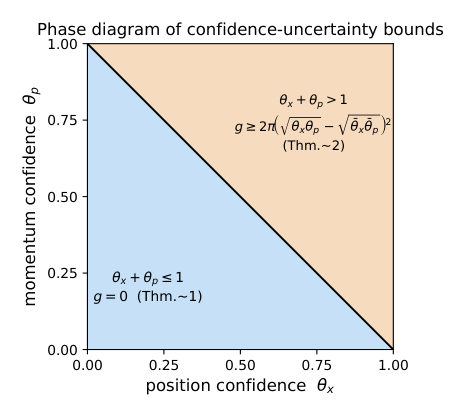

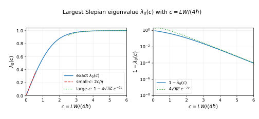
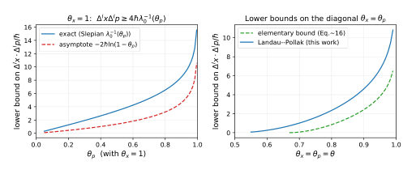
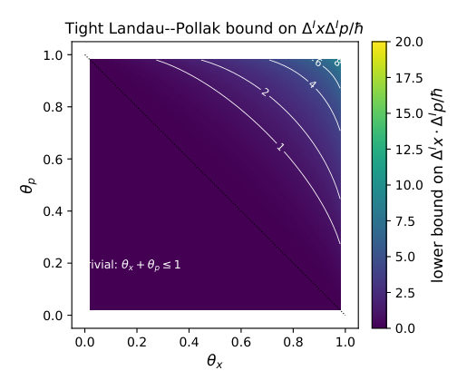
← Index · ← Previous · Next →
Authors: Jiho Jung, Donghwa Ji, Mingyu Lee, Kabgyun Jeong
Type: theory · Category: quantum information and computing · PDF: https://arxiv.org/pdf/2605.04582v1
Analysis basis: full PDF text, analyzed in chunks
Topic relevance: entanglement & information structure 2/5 · quantum measurements 1/5
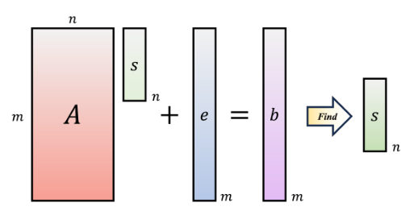
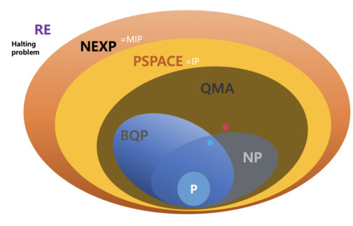
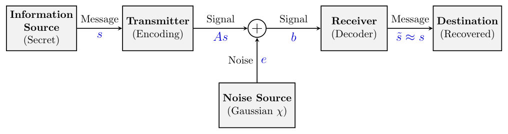
Summary. This paper argues that the security of lattice-based post-quantum cryptography is not mathematically absolute but depends on the current difficulty of performing complex quantum state preparations. By framing LWE noise as a type of error that can be corrected using GKP-style protocols, the authors suggest that advancements in quantum error correction could eventually undermine these cryptographic foundations.
Why it may be interesting. It provides a deep connection between cryptographic noise and physical noise in continuous-variable quantum systems, suggesting that quantum error correction protocols could be used to break lattice-based encryption.
Main problem. The paper challenges the claim that lattice-based cryptography, specifically the Learning with Errors (LWE) paradigm, is unconditionally secure against quantum adversaries.
Main result. The authors argue that LWE security relies on transient physical and engineering bottlenecks, such as the difficulty of state preparation and QRAM access, rather than an impenetrable mathematical boundary, as the injected noise can be treated as a correctable displacement error.
Method. The study uses a combination of quantum complexity theory (T-depth analysis), information-theoretic thermodynamics (Landauer's principle), and quantum error correction analogies (GKP codes) to analyze the vulnerability of LWE.
Model / system. The model treats LWE samples as a coherent physical superposition state and maps the cryptographic Gaussian noise to continuous-variable displacement errors in a quantum Hilbert space, comparable to GKP error-correcting architectures.
Key observables. Probability amplitude of the target basis state, interference patterns of the error distribution, and T-depth complexity.
Important parameters / regimes. Integer modulus q, dimension n, error distribution chi, and the T-depth of quantum gate layers.
Assumptions / limitations. The argument assumes that a sufficiently coherent quantum computer can successfully map classical LWE instances into a continuous-variable Hilbert space.
Figures summary. Figure 1 shows the algebraic structure of the LWE problem with added error; Figure 2 illustrates complexity classes and the LWE/BQP relationship; Figure 3 compares Shannon's communication model to the LWE framework.
Paper structure. The paper progresses from the algebraic definition of LWE to a quantum superposition model, applies the QFT to demonstrate error amplification, identifies state preparation as a physical bottleneck, and concludes by mapping LWE to error-correctable continuous-variable systems.
Modern lattice-based cryptography, particularly the learning with errors paradigm, relies on injecting artificial noise to secure data against quantum adversaries. This study systematically examines the theoretical and physical boundaries of this noise-reliant model across four interconnected domains: computational complexity, information-theoretic thermodynamics, quantum error correction, and quantum learning theory. Starting from the algorithmic foundation, our analysis notes that these frameworks rely on provisional complexity-theoretic assumptions that remain vulnerable to future quantum algorithmic advancements. Furthermore, by translating this cryptographic mechanism into physical thermodynamics, we illustrate that intentionally injected discrete Gaussian noise does not equate to the permanent erasure of information. Because the structural integrity of the cryptographic secret remains preserved within the ciphertext, advanced quantum error correction protocols and quantum learning models can efficiently extract the underlying mathematical kernel. Ultimately, we suggest that while lattice-based cryptography provides a robust transitional alternative, definitively classifying these frameworks as unconditionally post-quantum represents a premature classification relying on transient physical bottlenecks rather than impenetrable theoretical boundaries.
Authors: Antonia Hager, Torleiv H. Bryne, Mia Jukić
Type: both · Category: other · PDF: https://arxiv.org/pdf/2605.04951v1
Analysis basis: full PDF text, analyzed in chunks
Topic relevance: spintronics-quantum-optics interface 2/5 · QC/QI experiment 1/5
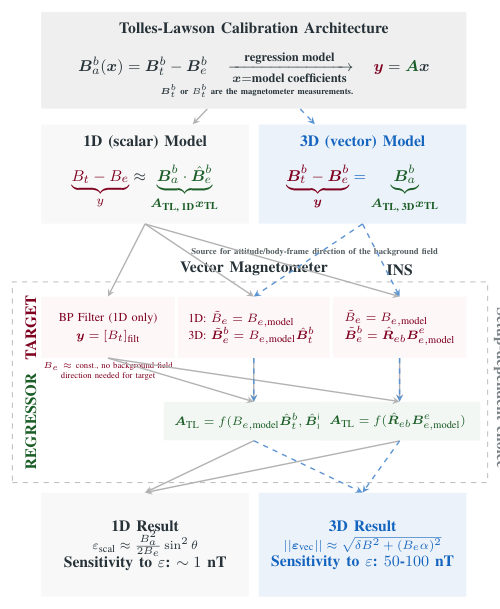
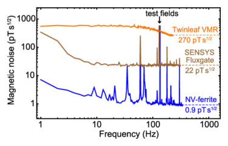
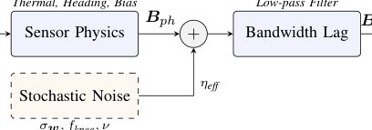
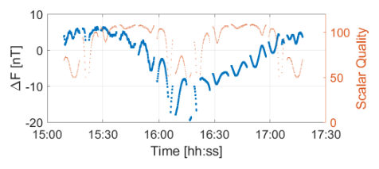
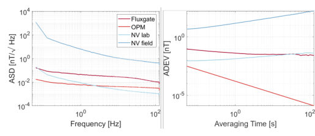
Summary. This paper evaluates how different magnetometer calibration models perform under realistic airborne conditions. It demonstrates that while 3D vector models are highly sensitive to orientation errors, 1D scalar models are much more robust, and it highlights the potential for NV sensors to improve sensor integration in magnetic navigation.
Why it may be interesting. not directly relevant
Main problem. The paper investigates the fundamental error sources in airborne magnetic platform calibration, specifically comparing the robustness of 1D (scalar) versus 3D (vector) Tolles-Lawson calibration models against attitude and sensor errors.
Main result. The 1D scalar model is found to be highly robust to attitude errors, whereas the 3D vector model is intrinsically sensitive to first-order attitude inaccuracies. While NV sensors may not solve the 'attitude bottleneck,' they offer advantages in sensor integration and synchronization.
Method. The authors use a rigorous theoretical analysis of error dependencies combined with a simulation framework that employs realistic sensor noise models, frequency-domain noise synthesis, and simulated aircraft flight trajectories.
Model / system. The system is an airborne platform (aircraft/UAV) equipped with various magnetometers (OPM, Fluxgate, and NV diamond sensors) and an Inertial Navigation System (INS). The magnetic interference is modeled using the Tolles-Lawson model, accounting for permanent, induced, and eddy-current components.
Key observables. Calibration residuals (error in nT), total magnetic field, Earth's magnetic field, and attitude/angular errors.
Important parameters / regimes. Earth's field magnitude (50,000 nT), platform interference field, angular error (alpha), and sensor noise parameters (white noise floor, corner frequency, and spectral slope).
Assumptions / limitations. The study focuses on static platform field components and ignores time-varying electronic/temperature-induced nonlinearities; it also assumes a constant, uniform geomagnetic background field.
Figures summary. Figure 1 shows the impact of field angle on projection errors; Figure 3/4 detail the sensor noise and error generation pipeline; Figure 6 shows sensor stability (ASD/ADEV); Figure 7/12 illustrate simulated flight trajectories and calibration/validation results.
Paper structure. The paper begins with a theoretical derivation of error dependencies in scalar and vector models, followed by the description of the sensor and noise models, the simulation framework for flight trajectories, a comparison of calibration results, and a discussion of the utility of NV sensors.
Airborne magnetometry requires rigorous calibration to isolate geomagnetic signals from sensor errors and platform magnetic fields. This magnetic compensation is needed for applications like geophysical exploration and magnetic anomaly navigation. The standard approach utilizes a quantum scalar Optically Pumped Magnetometer (OPM) and a less sensitive fluxgate vector sensor for attitude information. This configuration typically results in a scalar approximation of the platform field. Advancements in high-sensitivity Diamond Nitrogen-Vacancy (NV) vector magnetometers now enable a re-evaluation of the standard hardware configuration and full vector calibration models. We show through rigorous theoretical analysis that scalar calibration models are robust to misalignment. Vector calibration models, however, are intrinsically first-order sensitive to attitude errors, irrespective of the accuracy of the magnetic field measurements. These errors arise from inaccurate representation of the background field direction in the body frame, and can amplify small orientation errors into noticeable calibration residuals. Using realistic sensor models and flight trajectories, we evaluate different sensor configurations for magnetic calibration and assess the use of onboard Inertial Navigation Systems (INS) as an independent attitude reference to enable stable compensation. Our results suggest that quantum vector magnetometers like NV sensors are not sufficient to solve the attitude bottleneck for airborne vector magnetic calibration. However, as a single sensor capable of providing both absolute field and directional measurements, they may offer benefits regarding sensor placement, synchronization, and scalar calibration accuracy.
Authors: Jia-Yi Lin, Xin-Yu Li, Wei Wang, Shengjun Wu
Type: theory · Category: other · PDF: https://arxiv.org/pdf/2605.04484v1
Analysis basis: full PDF text, analyzed in chunks
Topic relevance: quantum measurements 2/5




Summary. The paper introduces a new way to measure uncertainty based on the probability of finding a particle within specific intervals rather than just the spread of the distribution. It reveals that while position and momentum can be jointly localized to arbitrary precision if the total confidence is low, a strict limit emerges when the required confidence levels are high. This provides a tighter alternative to the traditional Heisenberg uncertainty principle for specific probability-based applications.
Why it may be interesting. This work provides a more operational way to understand joint localization in phase space, which is highly relevant for quantum optics and precision measurements where the probability of finding a particle in a specific window is more critical than the variance.
Main problem. Addressing the limitations of standard-deviation and entropic uncertainty principles by quantifying the probability of finding a particle within specific small regions of position and momentum.
Main result. The authors introduce 'confidence uncertainty' and prove a two-regime phase diagram: for confidence levels where theta_x + theta_p <= 1, position and momentum can be jointly localized arbitrarily well, whereas for theta_x + theta_p > 1, a strict positive lower bound applies.
Method. The study utilizes Lenard's projection inequality, the Donoho-Stark operator-norm bound, and Slepian-Pollak-Landau theory involving prolate-spheroidal wave functions.
Model / system. A quantum particle in a pure state described by position (x) and momentum (p) representations.
Key observables. Confidence uncertainty (minimal Lebesgue measure of the support set), interval confidence uncertainty, and the probability mass (theta_x, theta_p) within specific regions.
Important parameters / regimes. Confidence levels (theta_x, theta_p), the time-bandwidth product (c), and the transition boundary defined by theta_x + theta_p = 1.
Assumptions / limitations. The primary results focus on pure quantum states, though the framework can be extended to mixed states.
Figures summary. Figure 1 shows a phase diagram of the (theta_x, theta_p) plane; Figure 2 displays the largest Slepian eigenvalue on linear and log scales; Figure 3 compares the new Landau-Pollak bound against the elementary bound.
Paper structure. The paper introduces new uncertainty measures, establishes a phase diagram for two distinct regimes, provides analytical proofs for lower bounds using signal processing theory, performs numerical evaluations of Slepian eigenvalues, and compares the new bounds against established Heisenberg, entropic, and Donoho-Stark bounds.
Heisenberg's uncertainty principle states that the position and momentum of a particle cannot be sharply determined simultaneously. Standard-deviation and entropic formulations capture the spread of the probability distribution but say little about the probability itself contained in a small region. We introduce the "confidence uncertainty" $Δ^{c}x(θ_x)$ as the minimal Lebesgue measure of the support set in which the particle is found with probability at least $θ_x$, and the companion "interval confidence uncertainty" $Δ^{I}x(θ_x)$ which restricts the support to a single interval. We prove two complementary uncertainty inequalities. (i) For $θ_x+θ_p\le 1$ both confidence uncertainties can be made arbitrarily small simultaneously, so that no nontrivial product bound holds; in particular, position and momentum can be jointly localised with probability at least~$50\%$. (ii) For $θ_x+θ_p>1$ a lower bound holds: combining Lenard's projection inequality with the Donoho--Stark operator-norm bound we obtain $Δ^{c}x\,Δ^{c}p\geq 2π\hbar\bigl(\sqrt{θ_xθ_p}-\sqrt{(1-θ_x)(1-θ_p)}\bigr)^{\!2}$, and for the interval version we obtain the sharp implicit Landau--Pollak bound $Δ^{I}x\,Δ^{I}p\geq 4\hbar\,λ_{0}^{-1}\!\bigl((\sqrt{θ_xθ_p}-\sqrt{(1-θ_x)(1-θ_p)})^{2}\bigr)$, where $λ_{0}(c)$ is the largest prolate-spheroidal eigenvalue. We support the analytical bounds with numerical evaluation of $λ_{0}(c)$, provide closed-form small-$c$ and large-$c$ asymptotics, compute the optimal Slepian-superposition states that saturate the interval bound, and compare the resulting product against the variance Heisenberg--Kennard, the Białynicki-Birula--Mycielski entropic, and the Donoho--Stark concentration bounds.
Authors: Matteo Quinzi, Tommaso Chiarotti, Nicola Marzari
Type: theory · Category: numerical methods · PDF: https://arxiv.org/pdf/2605.04673v1
Analysis basis: full PDF text, analyzed in chunks
Topic relevance: Keldysh / 2PI / non-Gaussian methods 2/5
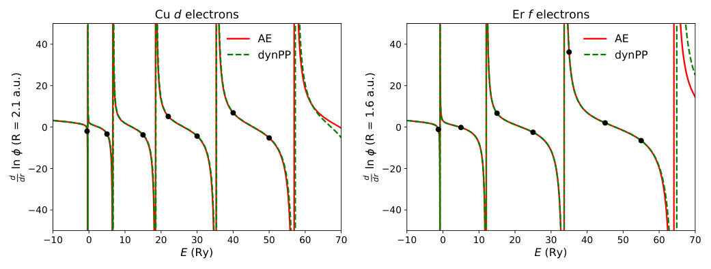
Summary. This paper introduces a new class of energy-dependent pseudopotentials that improve the transferability of first-principles calculations to high-energy and excited states. By using a sum-over-poles approach, it achieves high accuracy without the numerical instabilities typical of multi-projector methods. This provides a unified and consistent treatment of all-electron and pseudo-atom properties within many-body theory.
Why it may be interesting. The use of an embedding-problem formulation and the treatment of energy-dependent potentials are highly relevant to many-body dynamics and the development of frequency-dependent self-energies in correlated systems.
Main problem. Conventional static pseudopotentials struggle with transferability in excited-state calculations and high-energy states, often suffering from numerical instabilities when increasing the number of projectors.
Main result. The authors develop a framework for dynamical (energy-dependent) pseudopotentials using a sum-over-poles representation that decouples the number of reference energies from the number of projectors, ensuring accurate all-electron scattering over wide energy ranges.
Method. The method uses an embedding-problem formulation, a sum-over-poles (SOP) representation, and an algorithmic-inversion method to solve the nonlinear eigenvalue problem, combined with a variational strategy to optimize the basis set.
Model / system. The framework treats the electronic structure of atoms and solids as an embedding problem where valence electrons are coupled to an auxiliary bath representing core degrees of freedom via an energy-dependent potential.
Key observables. Logarithmic derivative of the potential, dynamical augmentation charges, radial momentum distribution, and spectral density.
Important parameters / regimes. Core radius (Rc), reference energies, number of poles, and number of projectors.
Assumptions / limitations. The derivation assumes spherical symmetry for atomic calculations and assumes the availability of radial all-electron and pseudo-orbitals.
Figures summary. Figure 1 shows the logarithmic derivative vs. energy for Cu and Er, demonstrating the match between AE and dynPP; supplementary figures show radial momentum distributions and wavefunction profiles.
Paper structure. Introduction of the dynamical embedding perspective, derivation of generalized norm-conservation, introduction of the sum-over-poles representation and algorithmic inversion, demonstration of numerical stability and efficiency, and validation via momentum-space analysis.
Pseudopotential theory has greatly driven first-principles calculations in materials, replacing the explicit treatment of the chemically inert core electrons with an effective potential acting only on the valence states. This is inherently an embedding problem, where tracing out the core electrons can be formulated in terms of a dynamical embedding potential. Motivated by this perspective, we first introduce a framework for dynamical (i.e., energy-dependent) pseudopotentials, showing how this leads to generalized norm-conservation conditions. Then, adopting a sum-over-poles representation, we disentangle the number of reference energies from the number of projectors; this allows to reproduce all-electron scattering at many reference energies with great accuracy and over very extended energy ranges. We further show that these pseudopotentials enter naturally into many-body total energy functionals, leading for the first time to a consistent and unified treatment of the all-electron atom, the pseudo-atom, and the solid within the same electronic-structure theory.
Authors: Wilson Wu, Victor Lecomte, Michael Winer, George Robinson, Jacob Hilton, Paul Christiano
Type: theory · Category: disordered systems and neural networks · PDF: https://arxiv.org/pdf/2605.05179v1
Analysis basis: full PDF text, analyzed in chunks
Topic relevance: Keldysh / 2PI / non-Gaussian methods 2/5
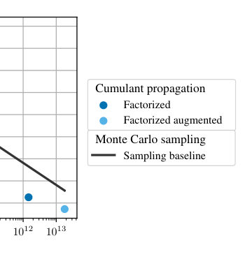
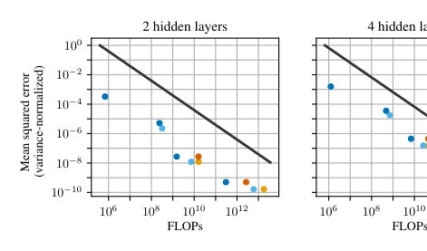
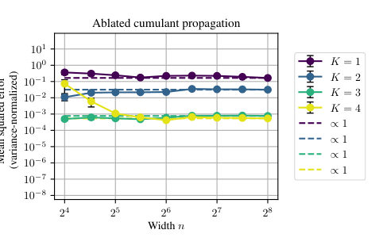
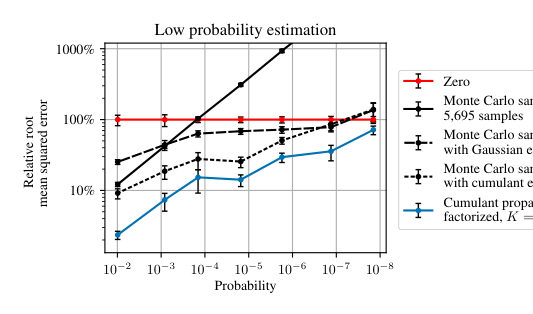
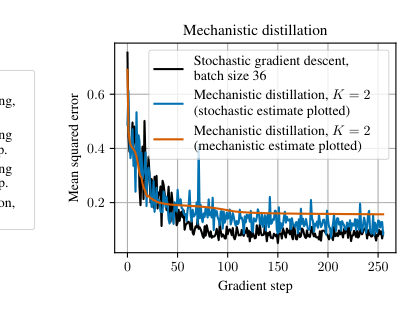
Summary. This paper introduces a way to calculate the expected behavior of large random neural networks without actually running samples through them. By propagating the statistical properties (cumulants) of the activations through the layers, the authors achieve much higher computational efficiency and better accuracy for predicting rare, high-risk events.
Why it may be interesting. not directly relevant
Main problem. Efficiently estimating the expected output and loss of wide, random multilayer perceptrons (MLPs) without the high computational cost of Monte Carlo sampling.
Main result. The authors develop a sample-free cumulant propagation method that achieves a target mean squared error using significantly fewer FLOPs than Monte Carlo sampling, specifically outperforming it by a factor of n in the large-width limit.
Method. The method uses cumulant propagation via Hermite expansions and diagram summation to track the distribution of activations layer-by-layer, including factorized versions to reduce complexity.
Model / system. Wide, random, fully-connected feedforward MLPs with L hidden layers and width n, using He initialization and Gaussian inputs.
Key observables. Expected output (quenched average), expected loss, and higher-order cumulants (mean, variance, etc.).
Important parameters / regimes. Network width (n), network depth (L), maximum cumulant order (K), and error tolerance (epsilon).
Assumptions / limitations. The theory assumes the large-width limit (n to infinity), fixed depth, and primarily focuses on polynomial or 'tame' activation functions like ReLU.
Figures summary. Figure 1 compares MSE vs FLOPs for various algorithms against Monte Carlo; Figure 2 shows MSE vs FLOPs for different depths; Figure 3 shows MSE scaling with width n; Figure 4 compares relative RMSE for rare event probabilities; Figure 5 compares distillation learning curves.
Paper structure. The paper introduces the problem of sampling inefficiency, presents the cumulant propagation algorithm and its factorized variants, provides theoretical complexity and error bounds using diagrammatic expansions, and demonstrates empirical superiority and applications in mechanistic distillation.
By far the most common way to estimate an expected loss in machine learning is to draw samples, compute the loss on each one, and take the empirical average. However, sampling is not necessarily optimal. Given an MLP at initialization, we show how to estimate its expected output over Gaussian inputs without running samples through the network at all. Instead, we produce approximate representations of the distributions of activations at each layer, leveraging tools such as cumulants and Hermite expansions. We show both theoretically and empirically that for sufficiently wide networks, our estimator achieves a target mean squared error using substantially fewer FLOPs than Monte Carlo sampling. We find moreover that our methods perform particularly well at estimating the probabilities of rare events, and additionally demonstrate how they can be used for model training. Together, these findings suggest a path to producing models with a greatly reduced probability of catastrophic tail risks.
Authors: Nimish Sharma, Tanay Nag
Type: theory · Category: statistical mechanics · PDF: https://arxiv.org/pdf/2605.04492v1
Analysis basis: full PDF text, analyzed in chunks
Topic relevance: non-equilibrium universality 2/5
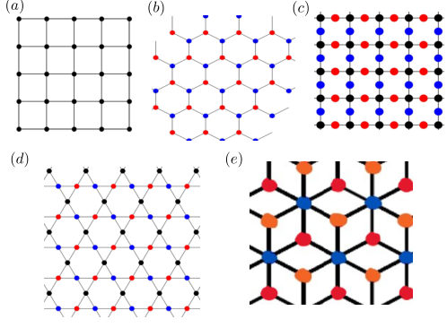
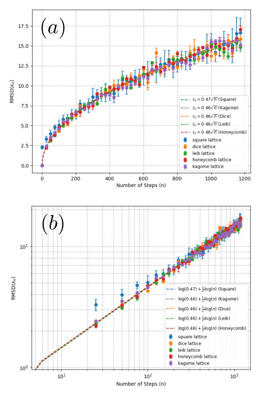
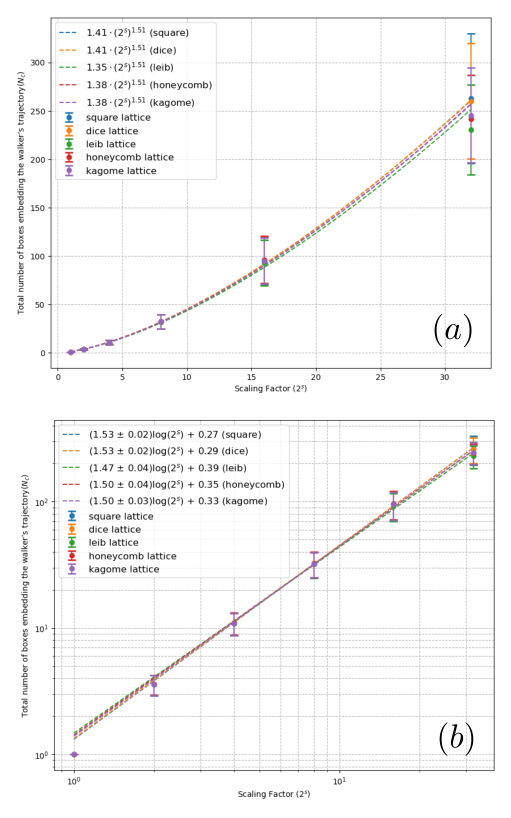
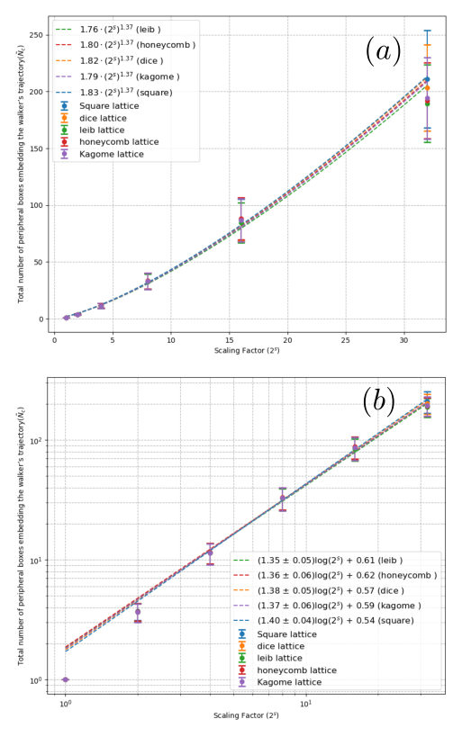
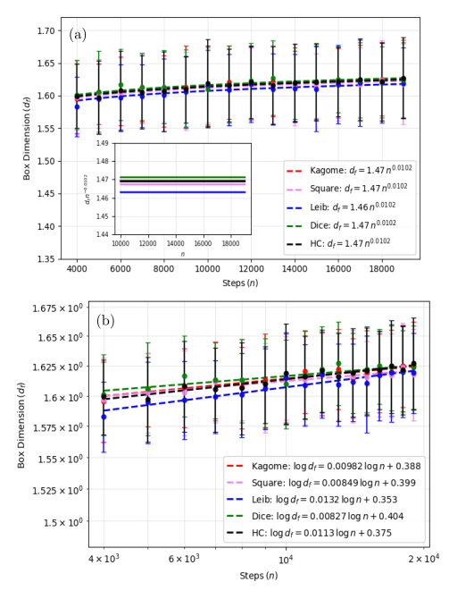
Summary. This paper examines how the geometry of 2D lattices influences the fractal properties of classical random walks. It demonstrates that while lattice connectivity causes measurable differences in fractal dimensions in finite systems, these differences vanish as the system approaches the thermodynamic limit of Brownian motion.
Why it may be interesting. not directly relevant
Main problem. Investigating how different 2D lattice geometries and connectivity patterns affect the finite-size scaling properties, mass fractal dimension, and hull fractal dimension of classical random walks.
Main result. The study finds that while RMSD remains universally diffusive, the mass and hull fractal dimensions exhibit a weak ordering correlated with the average coordination number, though they eventually converge to Brownian motion values in the thermodynamic limit.
Method. Numerical simulations of ensembles of random walkers on various 2D lattices using box-counting methods, log-log scaling analysis, and data collapse techniques.
Model / system. Unbiased, non-self-avoiding classical random walks on various 2D lattices including Square, Kagome, Lieb, Honeycomb, and Dice lattices.
Key observables. Root Mean Square Displacement (RMSD), mass fractal dimension (df), and hull fractal dimension (dh).
Important parameters / regimes. Lattice connectivity (coordination number), number of steps (n), and the thermodynamic limit.
Assumptions / limitations. The random walks are assumed to be unbiased and non-self-avoiding.
Figures summary. Figure 1 shows the lattice structures; Figure 2 displays RMSD scaling; Figure 3 shows mass fractal dimension via box-counting; Figure 4 shows hull dimension scaling; Figure 6 illustrates the variation of hull dimension with step number and its data collapse.
Paper structure. The paper introduces various 2D lattice geometries, presents simulation results for RMSD and fractal dimensions, analyzes the influence of coordination number on scaling, and concludes with a data collapse analysis demonstrating convergence to the thermodynamic limit.
We consider various two-dimensional lattices such as square, Kagome, Lieb, honeycomb, dice lattices of finite extent, to study the effect of lattice profile in terms of the number of nearest neighbour and connectivity patterns on the classical random walk in the unbiased scenario. We find that the standard deviation of distance travelled by the walker is insensitive to the non-uniformity of the lattice profile leading to diffusive transport even in the finite size lattices. Our study indicates that the mass fractal dimension varies within a window $1.50\pm 0.03$ for all finite-size lattices. A weak ordering within the above window, correlated with the average coordination number, is observed, while Lieb and square lattices yielding the minimum and maximum values, respectively. However, confidence intervals reveal substantial statistical overlap for several lattice pairs even though the lattice profiles vary as far as the average number of connecting bonds and directionality of bonds are concerned. We also study the scaling complexity of the circumference of the closed curve traced by the walker while investigating the hull dimension. We find similar trend for hull fractal dimension as well and that was found to within the window $1.37\pm 0.03$ for finite-size lattices. Within the above window, the ordering remains qualitatively unaltered as compared to mass dimension while the confidence interval rectifies the order quantitatively. The square lattice clearly exhibits the upper bound for hull fractal dimension and the remaining lattices show extensive statistical overlap within the above window. We exhibit a tendency of the mass and hull fractal dimension to reach their thermodynamic values given by Brownian motion when we allow more number of steps within the finite size of the lattice, as confirmed by a data collapse analysis.
Authors: Samuel Haeuser, Richard H. J. Kim, Lin-Lin Wang, Thomas Koschny, Pedro M. Lozano, Genda Gu, Randall K. Chan, Joong-Mok Park, Martin Mootz, Liang Luo, Qiang Li, Jigang Wang
Type: experiment · Category: strongly correlated electrons · PDF: https://arxiv.org/pdf/2605.04883v1
Analysis basis: full PDF text, analyzed in chunks
Topic relevance: spintronics-quantum-optics interface 2/5
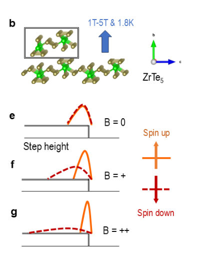
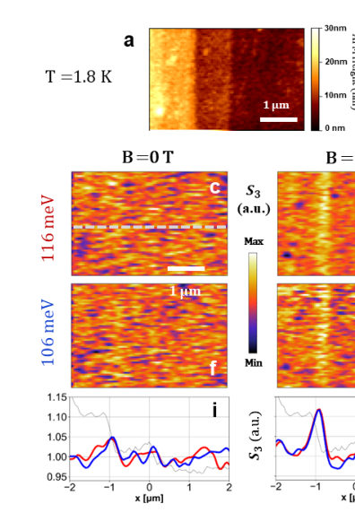

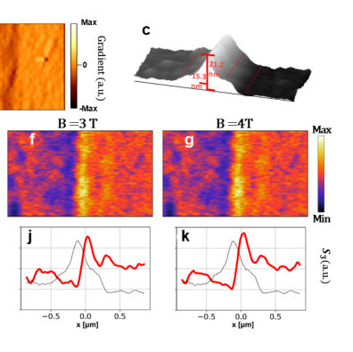
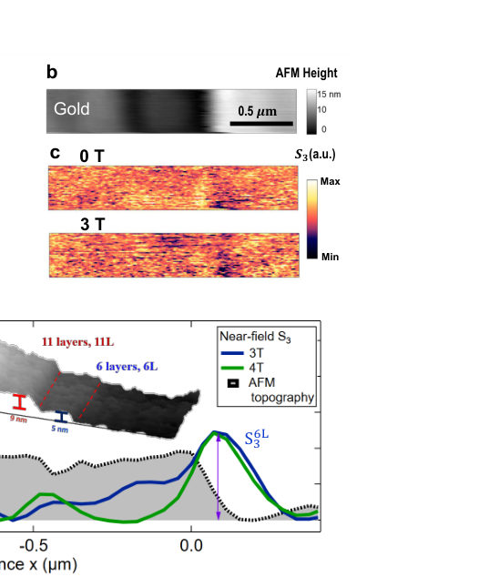
Summary. This paper demonstrates the ability to visually map spin-polarized edge states in a topological insulator using infrared near-field microscopy. By applying a magnetic field, the researchers induced a 'brightening' effect that reveals the underlying spin-splitting of the edge modes. This discovery highlights a regime where topological edge conduction remains robust at high frequencies, even when magnetic fields induce gaps that would otherwise suppress DC conduction.
Why it may be interesting. not directly relevant
Main problem. The difficulty of visualizing and characterizing the nanoscale spin-polarized helical edge modes and their magnetic-field-induced spin-splitting in the weak topological insulator ZrTe5.
Main result. The researchers observed 'magnetic brightening,' where an applied magnetic field enhances near-field conductivity at step edges by lifting spin degeneracy and creating imbalanced AC currents. They also demonstrated that these high-frequency edge states remain robust and scale linearly with the number of atomic layers, unlike DC transport which is suppressed by magnetic gaps.
Method. Cryogenic magneto-infrared scattering-type scanning near-field optical microscopy (cm-IR-sSNOM) was used at temperatures down to 1.8 K and magnetic fields up to 5 T.
Model / system. The physical system is ZrTe5, a weak topological insulator characterized by spin-polarized, counter-propagating helical edge modes at crystal step edges and domain walls.
Key observables. Near-field conductivity, infrared photocurrent oscillations, amplitude and phase contrast, and spatial width of edge modes.
Important parameters / regimes. Temperatures of 1.8-2 K, magnetic fields up to 5 T, photon energies around 100 meV, and atomic layer numbers ranging from 6 to 11.
Assumptions / limitations. The edge states are assumed to be effectively stacked and robust in multi-layer structures due to weak van der Waals coupling.
Figures summary. Fig 1 shows a schematic of the AFM probe and the mechanism of magnetic brightening; Fig 2 displays AFM topography and sSNOM images showing enhanced signal at step edges under magnetic fields; Fig 4d visualizes the spatial extent of the magnetically separated edge modes.
Paper structure. The paper introduces the challenge of nanoscale transport, describes the experimental setup and ZrTe5 system, presents the discovery of magnetic brightening and spin-splitting, validates the results with layer-scaling and control experiments, and concludes with implications for future microelectronics.
Efficient sub-10 nm electric transport remains a major challenge for nanoelectronics due to high losses and impedance mismatches in conventional Drude metals. Despite their promise of dissipationless, reflection-free conduction, topologically protected chiral edge modes remain little explored in their nanoscale spin polarized transport-particularly regarding real-space visualization, magnetic field tunability, and high-frequency edge conductivity. Here, we report magnetic brightening and nanoscale visualization of highly spin-polarizable infrared helical edge states using cryogenic magneto-infrared scattering-type scanning near-field optical microscopy (cm-IR-sSNOM). Our measurements reveal magnetic field-induced near-field conductivity at step edges, uncovering quantum spin Hall spin-splitting modes with enhanced infrared polarizability and slightly narrowed near-field profiles. In addition, the infrared edge electrodynamic response scales nearly linearly with atomic layer number, providing compelling evidence that magnetic-field-induced gaps do not disrupt individual-layer edge states at energies of around 100 meV. These results sharply contrast with microwave and DC transport, where even small magnetically induced gaps decrease edge conduction. Magnetically tunable, topologically robust high-frequency edge modes open a pathway toward ultralow-loss nanoscale interconnects and quantum logic architectures for next-generation microelectronics, spintronics and quantum information science.
Authors: Hsueh-Hao Lu, Yasunari Suzuki, Yasunobu Nakamura, En-Jui Kuo
Type: theory · Category: quantum information and computing · PDF: https://arxiv.org/pdf/2605.04758v1
Analysis basis: full PDF text, analyzed in chunks
Topic relevance: entanglement & information structure 2/5
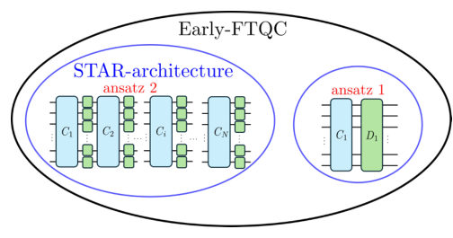
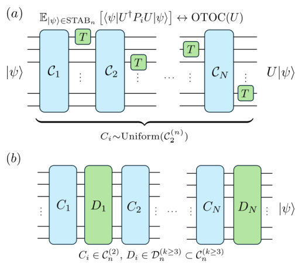
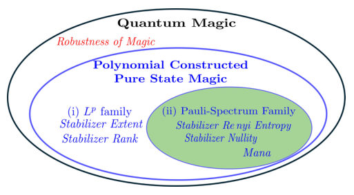
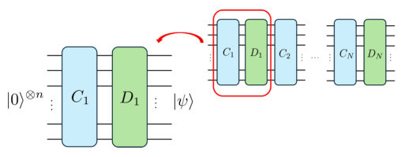
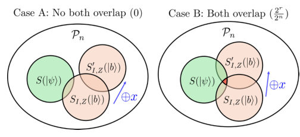
Summary. This paper provides a fundamental framework for maximizing non-stabilizer resources in early fault-tolerant quantum computers. It proves that gate hierarchy and state-independent sequences are insufficient for magic generation, establishing that optimal architecture design must be state-aware and utilize multi-qubit interactions.
Why it may be interesting. not directly relevant
Main problem. Optimizing the generation of quantum magic (non-stabilizerness) in early fault-tolerant quantum computing (FTQC) architectures by selecting optimal gate sequences and input states.
Main result. The authors prove two no-go theorems: the Clifford hierarchy level alone cannot universally order magic, and no state-independent sequence of operations can guarantee monotonic magic improvement. They also identify a bottleneck in single-qubit rotation architectures and propose multi-qubit diagonal phases as a solution.
Method. The study uses the resource theory of magic, Pauli-spectrum analysis, and the algebraic properties of the Clifford hierarchy, employing symplectic formalism and phase-polynomial representations to derive analytical bounds.
Model / system. The paper analyzes early FTQC circuit models, specifically a shallow-layer model (one Clifford layer followed by a diagonal hierarchy gate) and an N-layer model (alternating Clifford and diagonal layers) inspired by the STAR architecture.
Key observables. Quantum magic (non-stabilizerness), Pauli spectrum (expectation values), stabilizer Renyi entropy, and Pauli rank (support size).
Important parameters / regimes. Clifford hierarchy level (k), number of pure-Z generators (r), number of layers (N), and phase-polynomial parameters.
Assumptions / limitations. The analysis focuses on pure quantum states and assumes ideal, high-fidelity Clifford operations.
Figures summary. Figure 1 shows the structural classification of the analyzed architectures; Figure 2 compares standard T-doped random circuits with the early FTQC framework; Figure 3 illustrates the organization of magic measures; Figure 4 depicts the shallow-layer and N-layer circuit models.
Paper structure. The paper begins by classifying magic measures and establishing a uniqueness theorem for Pauli-spectrum functionals. It then analyzes the shallow-layer model to derive zero-magic and maximal-magic conditions, followed by an investigation of the N-layer model to present no-go theorems regarding hierarchy and monotonic improvement. Finally, it identifies architectural bottlenecks and proposes multi-qubit rotation strategies.
We address the circuit-design problem of maximizing quantum magic in early fault-tolerant quantum computing (early FTQC), where logical dynamics natively take the form of alternating Clifford layers and diagonal non-Clifford layers. To render this optimization analytically tractable, we first prove a uniqueness theorem: for operational magic functionals built from Pauli expectation values, the axioms of faithfulness and tensor-product additivity force a Rényi-type dependence on the Pauli-spectrum. Leveraging the closed phase-polynomial description of the diagonal Clifford hierarchy, we derive exact Pauli-spectrum expressions and tight bounds for a shallow-layer model. These bounds expose a zero-magic mechanism and prove that maximal magic strictly requires graph-state preconditioning. Consequently, we establish our first no-go theorem: hierarchy level alone cannot universally order operational magic. Extending our framework to the $N$-layer model motivated by the Space-Time Efficient Analog Rotation (STAR) architecture, we obtain an exact iterative update rule for the Pauli spectrum. This yields a second no-go theorem: no state-independent sequence of operations can guarantee monotonic magic improvement. Together, these theorems demonstrate that algebraic gate structures are fundamentally insufficient to dictate resource generation. To overcome this, we reframe early FTQC gate selection as a state-aware, differentiable optimization over continuous analog parameters. Finally, we identify a severe kinematic expressibility bottleneck in architectures restricted to single-qubit $Z$-rotations and show that introducing nonlinear diagonal phases, such as multi-qubit $Z$-rotation, shatters this bottleneck. This provides a fundamental principle for demonstrating early FTQC, establishing scalable magic generation as a foundational benchmark for evaluating early FTQC architectures.
Authors: Ivan Dutta, Aayush Vijayvargia, Anamitra Mukherjee, Onur Erten, Kush Saha
Type: theory · Category: strongly correlated electrons · PDF: https://arxiv.org/pdf/2605.05196v1
Analysis basis: full PDF text, analyzed in chunks
Topic relevance: entanglement & information structure 1/5 · scars & prethermalization 1/5
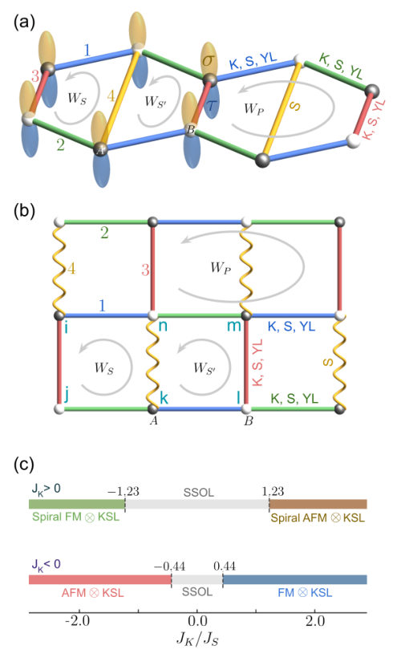
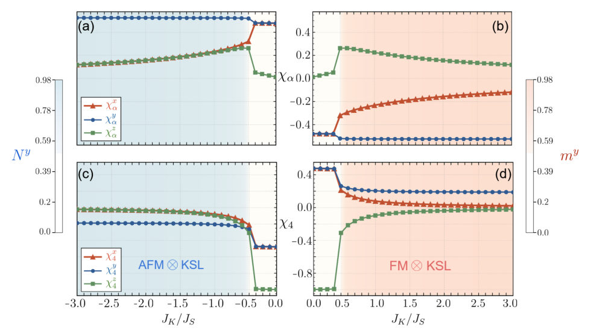
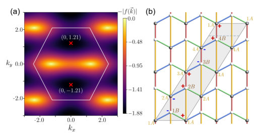
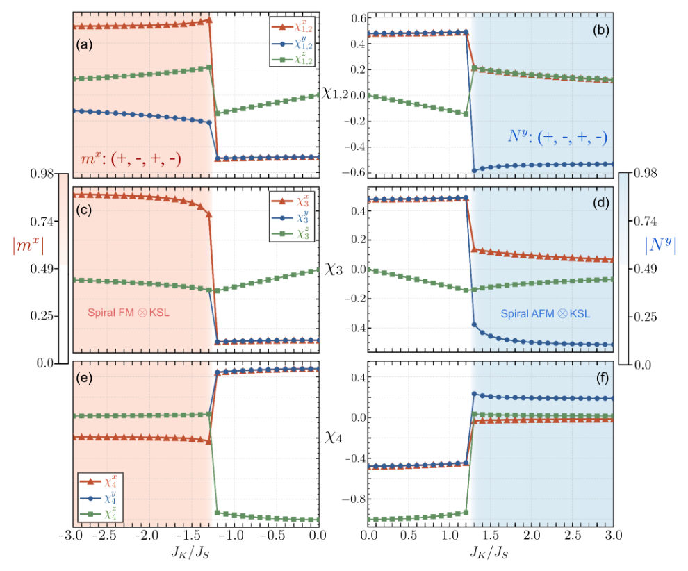
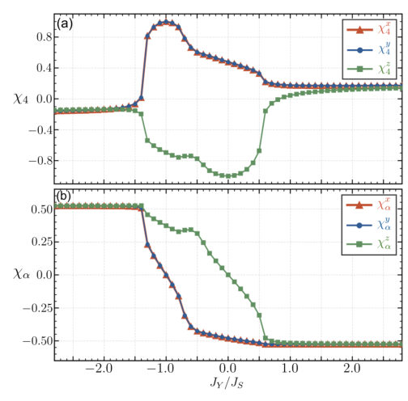
Summary. This paper explores what happens when two different types of quantum spin liquids are merged into a single lattice. It reveals that the system can undergo 'magnetic fragmentation,' where magnetism and topological order coexist, and shows how tuning interactions can lead to complex phase transitions and restored exact solvability.
Why it may be interesting. not directly relevant
Main problem. Investigating the emergent ground states and phase transitions that occur when two independent, exactly solvable spin-orbital Hamiltonians (Kitaev and Yao-Lee) are combined on a common lattice geometry.
Main result. The study discovers 'magnetic fragmentation,' where the spin sector develops magnetic order while the orbital sector retains topological order, and identifies a special point where the model restores exact solvability.
Method. Self-consistent Majorana mean-field analysis, perturbative calculations in the strong-Kitaev limit, and Luttinger-Tisza analysis for determining ordering wavevectors.
Model / system. A hybrid spin-orbital model on a modified honeycomb/square lattice featuring both Kitaev-type interactions and square-lattice-type interactions involving spin and orbital degrees of freedom.
Key observables. Magnetization (m_lambda), bond order parameter (chi_lambda), Majorana Dirac bands, Lifshitz transitions, and plaquette flux sectors.
Important parameters / regimes. Kitaev coupling strength (J_K), square-lattice coupling strength (J_S), and the ratio of Yao-Lee to square-lattice couplings (J_Y/J_S).
Assumptions / limitations. Use of mean-field decoupling for quartic terms and a unit cell approximation to handle incommensurate magnetic structures.
Figures summary. Schematic of the modified honeycomb lattice, color plots of Majorana conduction bands showing Lifshitz transitions, and energy per site plots for the mean-field solutions.
Paper structure. Introduction to spin-orbital models, description of the hybrid Kitaev and Yao-Lee Hamiltonians, mean-field methodology, analysis of the Kitaev-square regime (magnetic fragmentation), analysis of the Yao-Lee-square regime (band evolution), and discussion of the exact solvability point.
Spin-orbital generalization of Kitaev model provides a robust extension to the original Kitaev model. However, real materials often exhibit competing interactions that break exact solvability which can give rise to new phases. Motivated by recent microscopic proposals of coexisting Yao-Lee and Kitaev couplings, we investigate the fate of the ground state when two independent exactly solvable spin liquid Hamiltonians each originally formulated on different lattice geometries are combined on a common lattice environment. We first focus on the hybrid Kitaev's honeycomb and square-lattice model. Using self-consistent mean-field analysis and perturbative calculation, we show that the strong-Kitaev regime yields magnetic order in the spin sector, while the orbital sector retains its topological order. We further analyze the hybridization of the Yao-Lee and square-lattice models and find that the model exhibits a rich evolution of Majorana Dirac bands and Lifshitz transitions. Remarkably, when the Yao-Lee and square-lattice couplings are equal and opposite, the model restores its exact solvability with a single itinerant Majorana flavor. These results demonstrate that hybrid spin liquid platforms may host various emergent phases beyond conventional exactly solvable limits.
Authors: Joshua M. Courtney
Type: theory · Category: quantum information and computing · PDF: https://arxiv.org/pdf/2605.05036v1
Analysis basis: full PDF text, analyzed in chunks
Topic relevance: Rydberg arrays 1/5
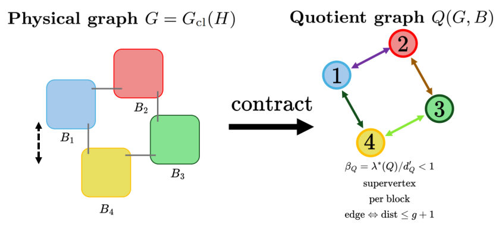
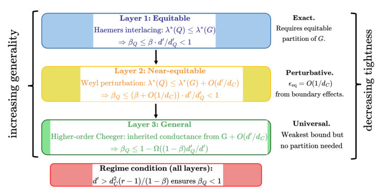
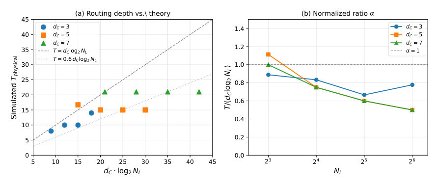
Summary. This paper provides a theoretical framework for efficient qubit routing in next-generation quantum computers. It proves that using high-connectivity Ramanujan hypergraphs allows for moving large error-correcting code patches with a routing depth that scales linearly with the code distance, significantly reducing the overhead for fault-tolerant operations.
Why it may be interesting. not directly relevant
Main problem. Determining the routing complexity and depth required to move large, rigid blocks of qubits (representing surface code patches) across reconfigurable quantum architectures without violating fault-tolerance constraints.
Main result. The authors establish that the block routing number scales as Theta(d_C log N_L), proving that routing depth scales linearly with code distance rather than quadratically, provided the hardware operates in a high-connectivity regime.
Method. The study employs spectral graph theory, specifically using Haemers interlacing, Weyl perturbation, and higher-order Cheeger inequalities on Ramanujan hypergraphs and their quotient graphs, combined with LMR scheduling and Valiant's routing algorithm.
Model / system. The model consists of surface code patches of size d_C^2 atoms moving as rigid blocks on a reconfigurable lattice modeled by the clique expansion of a Ramanujan hypergraph, applicable to neutral-atom and QCCD trapped-ion architectures.
Key observables. Block routing number (rt_B), routing depth, congestion, and spectral ratio (beta_Q).
Important parameters / regimes. Code distance (d_C), number of blocks (N_L), hypergraph rank (r), base degree (d), and the high-connectivity regime condition.
Assumptions / limitations. The blocks are assumed to be rigid during transport, and the hardware must satisfy a high-connectivity threshold to maintain the expansion properties of the host graph.
Figures summary. Figure 1 shows the mapping from physical graphs to weighted quotient graphs; Figure 2 illustrates the three-layer spectral argument hierarchy; Table 2 compares simulated routing depth against theoretical predictions.
Paper structure. The paper introduces the routing problem, defines the Ramanujan hypergraph model, develops a three-layer spectral argument for quotient graph inheritance, establishes the routing complexity bounds, integrates error models and syndrome extraction protocols, and concludes with extensions to QCCD and deformable patches.
We analyze permutation routing of rigid blocks representing surface code patches of $d_C^2$ atoms on a reconfigurable lattice with hypergraph transformations. For a hypergraph $H$, code distance $d_C$, $s=d_C^2$, number of blocks $N_L$, and guard distance $g$, we show the block routing number $\mathrm{rt}_B(H, s, g) = Θ(d_C \log N_L)$. A spectral analysis of the quotient graph $Q(G_{\mathrm{cl}}(H), B)$ (blocks as supervertices) shows that the spectral ratio $β_Q < 1$ is preserved in the high-connectivity regime. Negative association of block permutations and congestion bounds are used for random intermediate configurations. Serialization establishes that each quotient routing phase requires $O(d_C)$ physical sub-steps due to the block footprint width. A lower bound $\mathrm{rt}_B = Ω(d_C \log N_L)$ follows from combining the spectral lower bound on quotient phases with the traversal cost per phase. We include error model analysis grounded in recent experimental results, syndrome extraction protocols (stop-and-correct, rolling active fault-tolerant (AFT) measurement, and adaptive deformation), and integration with lattice surgery compilation via the Litinski protocol. Composition with the correlated-decoding scheme reduces syndrome-extraction overhead from $O(d_C)$ to $O(1)$ per correction window, leaving routing as the leading-order contributor to the integrated $O(d_C \log N_L)$ depth. Spectral inheritance is organized in a hierarchy: exact (Haemers interlacing on equitable partitions), perturbative (Weyl bounds for near-equitable partitions, a practically relevant case for surface-code patches), and universal (higher-order Cheeger). Methods extend directly to QCCD trapped-ion architectures under the same regime condition, with junction crossings replacing AOD transports as the elementary single-hop translation.
Authors: Josey Stevens, Sebastian Deffner
Type: theory · Category: quantum information and computing · PDF: https://arxiv.org/pdf/2605.04329v1
Analysis basis: full PDF text, analyzed in chunks
Topic relevance: quantum measurements 1/5
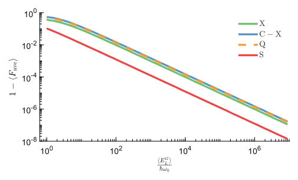
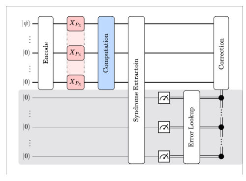
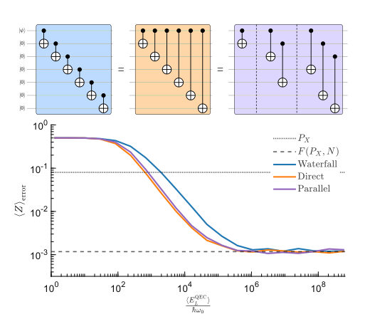
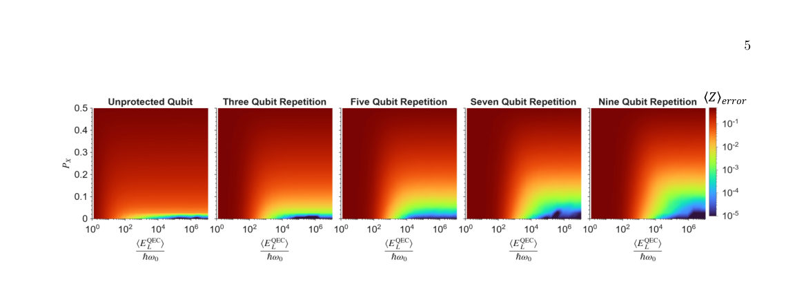
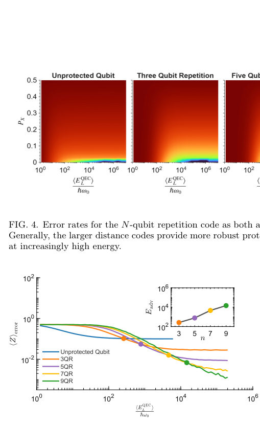
Summary. This paper demonstrates that achieving higher precision in quantum error correction requires an exponential increase in control energy. It highlights that the physical implementation of QEC circuits is just as important as the code itself due to the energy-error tradeoff.
Why it may be interesting. It provides a fundamental physical constraint (energy scaling) on the scalability of quantum error correction, which is critical for designing realistic hardware for open quantum systems and many-body quantum processors.
Main problem. Investigating the fundamental energy-error tradeoff in Quantum Error Correction (QEC) and determining if the required energetic resources for encoding are physically feasible.
Main result. The study reveals a universal tradeoff where required energetic resources scale exponentially with the targeted precision of the encoding, and that different QEC circuit implementations significantly impact error performance.
Method. The authors use a precision-noise model to calculate a tight lower bound on control energy and perform numerical simulations comparing various QEC codes (repetition, perfect, and Steane) and encoding schemes.
Model / system. A precision-noise model where gate errors arise from quantum fluctuations in classical electromagnetic control fields, applicable to platforms like trapped ions, semiconductors, and superconducting qubits.
Key observables. Average gate fidelity (F_ave), computation error rate (Z_error and X_error), and control energy (E_G_L).
Important parameters / regimes. Gate-level noise (epsilon), channel-level bit-flip probability (P_X), code distance (N), and number of fault-tolerant validation rounds (v).
Assumptions / limitations. All gate coefficients are subject to the same noise distribution, and all input states are in the computational basis.
Figures summary. Figure 1 shows gate error vs. control energy; Figure 2 illustrates the QEC process; Figure 3 compares encoding schemes for repetition codes; Figure 4 plots error rates vs. energy and channel noise; Figure 6 shows error rates for different perfect code encodings; Figure 7 compares various distance-3 codes; Figure 8 compares error rates for distance-3 codes at fixed noise.
Paper structure. The paper introduces the energy-error problem, defines the noise and energy models, analyzes gate-level energy bounds, compares different QEC codes and encoding schemes, and evaluates the overhead of fault-tolerant measurements.
While it has been widely recognized that genuine quantum advantage for practical problems might only be achieved with fault-tolerant quantum computers, it is still not entirely clear whether the required quantum error correction will be physically feasible. In the present work, we carefully analyze the required energy resources to encode the logical qubit states for repetition, perfect, and Steane codes. We find that there is a universal trade-off between the target precision and the required energetic resources. Importantly, we find that the energetic resources intimately depend on the specific physical realization of a quantum error correction code, and that the required resources scale exponentially with the targeted precision of the encoding.
Papers from primary archives without highlighted authors or any topic match. Click to expand.
Authors: Kenta Kasai
Type: theory · Category: quantum information and computing · PDF: https://arxiv.org/pdf/2605.05132v1
Analysis basis: abstract only; PDF text extraction failed or PDF unavailable
Summary. This paper provides a formal equivalence between two different factor-graph approaches for decoding CSS quantum error-correcting codes. It shows that using a joint belief propagation algorithm on two coupled Tanner graphs yields the same results as a single four-state belief propagation algorithm. This clarifies the theoretical relationship between different decoding implementations.
Why it may be interesting. not directly relevant
Main problem. The paper addresses the efficiency and formulation of syndrome decoding for CSS-type quantum error-correcting codes, specifically comparing different belief propagation approaches.
Main result. The author demonstrates that the 'joint BP' algorithm, which uses two coupled Tanner graphs, is mathematically equivalent to the 'four-state BP' algorithm after relabeling Pauli states and marginalizing components.
Method. The study utilizes a factor-graph formulation, comparing the sum-product algorithm on a joint binary factor graph (joint BP) against a four-state Pauli-label factor graph (four-state BP).
Model / system. The system is a CSS (Calderbank-Shor-Steane) quantum error-correcting code, where errors are decomposed into two binary Pauli error components subject to parity-check constraints.
Key observables. Posterior weights, messages, and beliefs within the belief propagation algorithm.
Important parameters / regimes. Local channel correlation between the two Pauli error components.
Assumptions / limitations. The decoding process assumes the error structure follows the CSS framework with local joint priors at each qubit.
Paper structure. The paper introduces the joint BP formulation for CSS decoding, defines the joint prior coupling, and provides a mathematical comparison/equivalence proof with the four-state BP method.
For CSS syndrome decoding, the two check matrices impose binary parity-check constraints on the two Pauli error components. The posterior can therefore be written as a binary factor graph with two Tanner graphs coupled by the local joint prior at each qubit. We call the sum-product algorithm on this factorization joint belief propagation (joint BP). Joint BP retains the local channel correlation between the two Pauli components. This note compares joint BP with the four-state Pauli-label factor graph used for four-state BP. The two algorithms are shown to have the same posterior weights, messages, and beliefs after relabeling the four local Pauli states and marginalizing the irrelevant binary component.
Authors: Lucas van der Horst, Maniraman Periyasamy, Abhishek Y. Dubey, Davide Bincoletto, Jakob S. Kottmann, Daniel D. Scherer
Type: theory · Category: quantum information and computing · PDF: https://arxiv.org/pdf/2605.04174v1
Analysis basis: full PDF text, analyzed in chunks
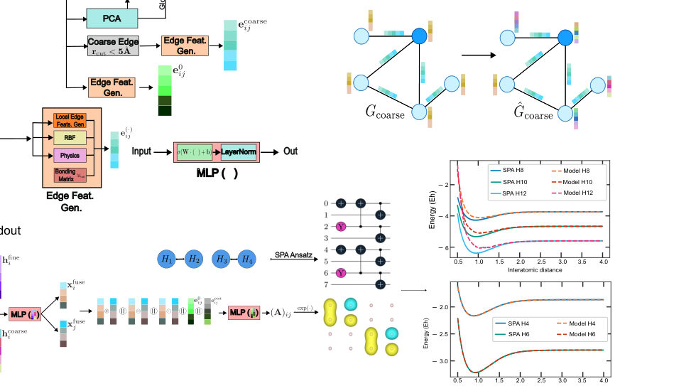
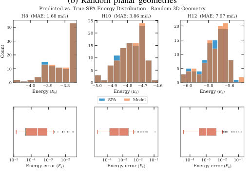
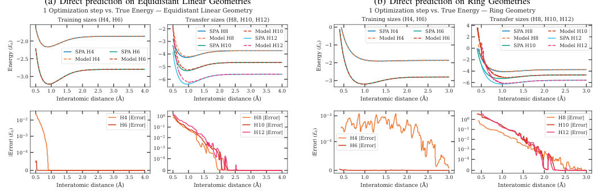
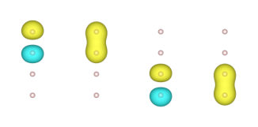
Summary. The paper presents a Graph Neural Network approach to predict optimized molecular orbitals directly from geometry. This method allows for much faster setup of VQE simulations and generalizes to larger molecular systems without retraining, significantly accelerating the hybrid quantum-classical workflow.
Why it may be interesting. It addresses a critical scalability bottleneck in NISQ-era algorithms by using machine learning to automate the classical pre-processing required for variational quantum chemistry.
Main problem. The computational bottleneck in VQE workflows caused by the need to re-optimize molecular orbital coefficients via expensive classical routines for every new molecular geometry.
Main result. A transferable Graph Neural Network (GNN) that predicts optimized orbital coefficients, achieving 30x faster inference than classical optimization and providing high-quality warm-starts that significantly reduce convergence iterations.
Method. A dual-scale GNN architecture using fine and coarse interaction cutoffs to predict the entries of an antisymmetric generator matrix, trained on small hydrogenic systems and tested on larger, unseen systems.
Model / system. Hydrogenic molecular systems (H4, H6, H8, H10, H12) using the Separable Pair Approximation (SPA) ansatz and the Hard-Core Boson (HCB) approximation within a VQE framework.
Key observables. Mean absolute energy errors (in milli-Hartrees) and reduction in optimizer iterations for ground-state energy convergence.
Important parameters / regimes. Interaction scales of r_fine = 2.5 A and r_coarse = 5.0 A; dissociation regime (1.5-4.0 A) and bonding regime (0.5-1.5 A).
Assumptions / limitations. The model is currently limited to hydrogenic systems in a minimal STO-3G basis and assumes real-valued orthogonal orbital rotation matrices.
Figures summary. Figure 1 shows the GNN pipeline from mapping to energy computation; Figure 2 displays energy distributions for different geometries; Figure 3 compares potential energy curves for predicted vs. classical energies and shows the impact of warm-starting; Figure 4 visualizes orbital shape transformations.
Paper structure. The paper introduces the VQE orbital optimization bottleneck, describes the GNN architecture and feature engineering (node/edge descriptors), presents training on small systems and transferability tests on larger systems, and concludes with error analysis and future directions for end-to-end automation.
Variational quantum eigensolver ansätze hold considerable promise for ground-state energy calculations on near-term quantum hardware, yet most promising ansatz designs currently strongly depend on how well the molecular orbital basis captures the electronic correlation of the system. Computing optimized orbital coefficients via classical routines is computationally expensive and must be performed independently for each molecular geometry -- a bottleneck that limits scalability across chemical space. We present a graph neural network framework that predicts optimized orbital coefficients directly from molecular geometry and pair-wise bonding structure. Trained on hydrogenic systems of modest size ($H_4$ and $H_6$) across tens of thousands of geometries, our model transfers to larger, unseen systems ($H_8$, $H_{10}$ and $H_{12}$) without retraining -- demonstrating strong out-of-distribution generalization with respect to system size. When evaluating on structured and random configurations, and comparing against energies obtained with full classical optimization, our model reaches mean absolute energy errors $\mathcal{O}(10^2)$ and $\mathcal{O}(10)$ milli-Hartrees, respectively. Beyond energy estimation, the predicted orbitals serve as high-quality warm-start initializations that substantially reduce optimizer iterations to ground-state energy convergence. These results establish graph neural networks as an effective and scalable strategy for accelerating orbital optimization in hybrid quantum-classical workflows, directly reducing the classical pre-processing overhead that currently limits the practical deployment of variational quantum eigensolver on near-term quantum hardware.
Authors: Federico Camia, Valentino F. Foit, Rongvoram Nivesvivat
Type: theory · Category: statistical mechanics · PDF: https://arxiv.org/pdf/2605.04395v1
Analysis basis: full PDF text, analyzed in chunks
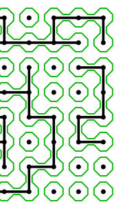
Summary. This paper provides a comprehensive review and extension of CFT methods to calculate geometric properties of critical systems, such as SLE curves and FK clusters. It successfully derives new analytical formulas for cluster densities and pivotal points by solving differential equations derived from conformal symmetry. The work unifies several previously separate results in the literature into a single framework.
Why it may be interesting. not directly relevant
Main problem. The paper aims to provide a pedagogical review and systematic extension of Conformal Field Theory (CFT) techniques to compute Schramm-Loewner Evolution (SLE) observables and the densities of anchored critical clusters in the upper half-plane.
Main result. The authors derive explicit analytical expressions for various cluster densities and SLE excursions, and calculate exact values for structure constants governing the merging of SLE curves and bubbles.
Method. The study utilizes Conformal Field Theory (CFT) techniques, specifically solving Belavin-Polyakov-Zamolodchikov (BPZ) differential equations and applying the Coulomb gas formalism to represent physical observables as correlation functions.
Model / system. The models studied include the Fortuin-Kasteleyn (FK) random cluster model, O(n) loop models, and Schramm-Loewner Evolution (SLE) in the critical regime.
Key observables. Anchored cluster densities, Schramm's left-passage probability, SLE Green's functions, densities of pivotal points, and structure constants for boundary operators.
Important parameters / regimes. The SLE parameter kappa, loop fugacity n, cluster weight Q, central charge c, and the cross-ratio xi.
Assumptions / limitations. The approach assumes the existence of full 2D conformal symmetry in the scaling limit and relies on the use of degenerate boundary operators.
Figures summary. Figures illustrate FK clusters and their boundaries, the difference between percolation clusters and their hulls, the insertion of boundary and bulk operators, and contour plots of cluster densities.
Paper structure. The paper begins with a review of CFT techniques for SLE observables, moves to the application of BPZ equations for various cluster densities, extends the scope to the general FK model, and concludes with the derivation of structure constants and new predictions for cluster boundaries.
We provide a pedagogical review of CFT techniques to compute certain Schramm-Loewner Evolution (SLE) observables in the upper half-plane. The approach relies on the ability to express the observables as bulk-boundary correlation functions that involve degenerate boundary operators and, therefore, obey certain differential equations. In particular, we recover Schramm's left-passage probability for SLE, the SLE Green's functions, and the generalized densities of ``anchored'' critical percolation clusters first obtained by Kleban, Simmons, and Ziff. We also obtain new formulas corresponding to the densities of pivotal points between critical Fortuin-Kasteleyn (FK) clusters.
Authors: Steven R. White
Type: theory · Category: numerical methods · PDF: https://arxiv.org/pdf/2605.04517v1
Analysis basis: full PDF text, analyzed in chunks
Summary. The paper introduces 'Angular Gausslets,' a new 3D localized basis set designed for efficient atomic electronic structure calculations. By using an integral diagonal approximation, the authors reduce the complexity of the electron-electron interaction, enabling high-precision DMRG simulations of atoms. This approach allows for the simultaneous treatment of static and dynamic correlation with microhartree accuracy.
Why it may be interesting. This work provides a highly efficient numerical framework for solving 3D many-body problems, offering a scalable way to handle the computational bottleneck of the four-index Coulomb interaction in atomic systems.
Main problem. Extending the 1D Gausslet basis construction to 3D to create a localized, orthonormal basis for atomic electronic structure that allows for an efficient, two-index approximation of the electron-electron interaction.
Main result. The development of 'Angular Gausslets' enables highly accurate DMRG calculations of first-row atoms, achieving microhartree precision for the Be atom by combining localized angular/radial bases with advanced extrapolation techniques.
Method. The method uses localized spherical Gaussians with an 'injection' technique to ensure exact low-angular-momentum coverage, combined with an Integral Diagonal Approximation (IDA) to compress the four-index Coulomb tensor into a two-index form, and utilizes ESVE for energy extrapolation.
Model / system. The study focuses on the electronic structure of atoms, specifically the first-row atoms (B, C, N, O, F, Ne) and the Helium atom, using an atom-centered Hamiltonian with a one-electron part and a two-electron Coulomb interaction.
Key observables. Ground-state energy, kinetic energy spectrum, Coulomb matrix elements, occupancy-weighted leakage, and local energy variance.
Important parameters / regimes. Angular resolution (number of centers N_Omega), width parameter (beta), radial scale (s), and the angular momentum injection limit (L_inj).
Assumptions / limitations. Assumes basis functions behave as localized bumps with short oscillatory tails and that the wavefunction varies slowly over the local neighborhood of the basis functions.
Figures summary. Figure 1 compares 1D Gaussian localization; Figures 2-3 illustrate the effectiveness of the injection method; Figure 4 shows the spatial localization of angular basis functions; Figure 5 shows the recovery of the kinetic energy spectrum; Figure 7 shows Hartree-Fock energy convergence; Figure 11 shows the final energy extrapolation.
Paper structure. The paper begins with the 1D Gausslet construction, moves to the 2D spherical angular Gausslet derivation and optimization, extends the basis to a 3D radial-angular combination, introduces the two-index IDA for the Coulomb interaction, and concludes with DMRG implementation, wavefunction transfer, and energy extrapolation benchmarks.
Gausslets are one of the few basis constructions for electronic structure that combine locality, orthonormality, variable resolution, and an accurate diagonal approximation for the electron-electron interaction, but the original construction is tied to one dimension. Radial gausslets extended this idea to atoms while leaving the angular degrees of freedom in spherical harmonics, so the atomic interaction remained only partially diagonal in the combined basis. Here we introduce generalized gausslets on the sphere and combine them shell by shell with radial gausslets to form an atom-centered basis in which the electron-electron interaction takes a two-index integral-diagonal form. The angular basis starts from localized spherical Gaussians and uses injection to make a low-$\ell$ spherical-harmonic subspace exact. Tests of the kinetic spectrum, low-$\ell$ Coulomb matrix elements, spherium, first-row Hartree--Fock calculations, and He exact diagonalization show systematic convergence with increasing angular resolution. We also develop DMRG methods for this basis, including compact MPOs, correlated small-space starting states, Givens-rotation transfers between nearby angular sizes, and embedded sampled variance extrapolation (ESVE). We show that this combination of ingredients can be used to solve the Be atom, with extrapolations in the number of angular functions but with fixed radial resolution, to within about 0.1 mH of the complete basis set limit exact energy. This shows that DMRG calculations of first row atoms which include both static and accurate dynamic correlation on the same footing are feasible.
Authors: Folkert de Ronde, Stephan Wong, Sebastian Feld
Type: theory · Category: quantum information and computing · PDF: https://arxiv.org/pdf/2605.04748v1
Analysis basis: full PDF text, analyzed in chunks
Summary. This paper presents an automated compiler designed to reduce the circuit depth of fundamental quantum subroutines like GHZ state creation and CNOT/CZ chains. By transforming sequential gate structures into parallelized versions, the compiler significantly reduces execution time and noise susceptibility, though it introduces a trade-off by increasing the total gate count.
Why it may be interesting. not directly relevant
Main problem. Quantum algorithms suffer from increasing circuit depth as they scale, leading to higher susceptibility to noise and longer execution times. Specifically, fundamental subroutines like GHZ state creation and CNOT/CZ chains often use sequential implementations that are not optimized for parallelism.
Main result. The development of a compiler-driven approach that automatically detects and transforms sequential subroutines into parallelized versions, achieving logarithmic depth for CNOT chains and constant depth for CZ chains and GHZ state creation, albeit with an increased gate count.
Method. A configurable compiler uses a single-pass detection algorithm to identify CNOT/CZ chains and GHZ structures, applying recursive decomposition for CNOTs and parallel layering for CZs, with a preference-based strategy to trade off gate count against depth.
Model / system. The work focuses on quantum circuit compilation for NISQ-era hardware, specifically targeting architectures utilizing CNOT (CX), CZ, and single-qubit rotation gates (RX, RY, RZ).
Key observables. Circuit depth, gate count, measurement count, and error susceptibility (decoherence, depolarization, and measurement noise).
Important parameters / regimes. Qubit counts ranging from 5 to 95; optimization modes (Conservative vs. Always); and VQE ansatz types (EfficientSU2, RealAmplitudes, TwoLocal).
Assumptions / limitations. The optimization is most effective for chains longer than 5 gates; the depth evaluation is limited to a local scope (the chain plus the next 100 operations) to maintain computational efficiency.
Figures summary. Figures 1-3 compare different GHZ generation schemes (linear, logarithmic, and constant depth); Figures 4-6 illustrate the evolution and decomposition of CNOT and CZ chains; Figure 7 shows commutation rules; Figure 8 shows intertwined chain optimization; Figure 9 is a detection algorithm flowchart; and Figures 10-14 present performance benchmarks across various VQE configurations.
Paper structure. The paper introduces the problem of circuit depth, describes the compiler's detection and transformation algorithms for specific subroutines, details the optimization strategies for GHZ and CNOT/CZ chains, presents performance analysis via benchmarks and VQE integration, and discusses the inherent trade-offs and limitations.
Optimizing quantum circuits by reducing circuit depth is essential for improving the efficiency and scalability of quantum algorithms, particularly as quantum hardware continues to evolve. This can be achieved by restructuring quantum algorithms to allow more parallelism. A compiler is needed to automatically detect and apply these optimizations. In this work, we focus on the optimization of two fundamental quantum subroutines: GHZ state creation and CNOT/CZ chain decomposition. Traditional implementations of these subroutines suffer from linearly increasing circuit depth, which limits scalability. We propose a compiler-driven approach that automatically detects and optimizes these two fundamental quantum subroutines. Our approach reduces circuit depth through constant-depth GHZ state creation, constant depth CZ chain decomposition, and logarithmic depth recursive CNOT chain decomposition, which enhance parallel execution. Performance analysis of benchmarked algorithms shows significant reductions in depth. However, our solution also results in an increased gate count, which makes our optimization a trade-off. The gate count for the CNOT chains is doubled, where logarithmic depth reduction is achieved. The reduced circuit depth results in more efficient algorithms by reducing execution time.
Authors: Melvin Strobl, Maja Franz, Lukas Scheller, Eileen Kuehn, Wolfgang Mauerer, Achim Streit
Type: theory · Category: quantum information and computing · PDF: https://arxiv.org/pdf/2605.04945v1
Analysis basis: full PDF text, analyzed in chunks
Summary. This paper demonstrates that optimizing microwave pulse parameters instead of standard quantum gates can significantly enhance the training performance of Quantum Fourier Models. By breaking the rigid parameter couplings found in gate-level circuits, pulse-level control provides new directions for gradient descent to escape local minima without altering the model's fundamental expressibility.
Why it may be interesting. not directly relevant
Main problem. Investigating how pulse-level control (optimizing microwave parameters) affects the training landscape and trainability of Quantum Fourier Models (QFMs) compared to standard gate-level parameterization.
Main result. Pulse-level control does not significantly change global expressibility but fundamentally improves local trainability by providing higher-dimensional escape routes from local minima, particularly for composite gates.
Method. The authors use an analytical framework to link pulse parameters to Fourier coefficients and perform numerical simulations on a 3-qubit system using the Adam optimizer and the Rotating Wave Approximation.
Model / system. Quantum Fourier Models (QFMs) implemented on superconducting transmon qubits, where the Hamiltonian includes static, drive, and dynamic components, and unitaries are controlled via pulse envelopes.
Key observables. Mean Squared Error (MSE), Fourier Coefficient Correlation (FCC), Expressibility (KL-divergence to 2-design), Jacobian rank, and fidelity/trace distance.
Important parameters / regimes. Gate-level angles (theta), pulse parameters (amplitude, width, duration), and pulse-area scaling (lambda).
Assumptions / limitations. The study assumes coherent pulse dynamics, ignores hardware-specific noise/crosstalk, and utilizes the Rotating Wave Approximation (RWA) in a closed-system model.
Figures summary. Figure 1 shows improved optimization trajectories and Jacobian rank with pulse control; Figure 2 compares MSE across different ansätze and implementation levels; Figure 3 illustrates frequency activation via pulse variance; Figures 4 and 5 show the sensitivity of fidelity and MSE to pulse parameter distortions.
Paper structure. The paper introduces the QFM framework, defines the pulse-level control model, provides an analytical proof regarding escape directions in the optimization landscape, presents numerical simulations comparing gate vs. pulse levels, and concludes with a sensitivity analysis of the metrics.
In the domain of variational quantum algorithms, quantum Fourier models (QFMs) provide a mathematically well defined structure for quantum machine learning (QML). There has been a substantial amount of work on the scalability and trainability of such models showcasing the potential but also the limitations for the prospective application of QFMs. However, much less is known in the context of pulse-level quantum computing, where the microwave parameters that implement unitary operations on the hardware are used to perform computations directly instead of through the interface of quantum circuits. In this work, we evaluate QFMs through the lens of pulse parameters and link metrics such as expressibility and Fourier coefficient correlation (FCC) to this extended set of variational parameters. We show that while control over pulse shapes does not significantly alter the global expressibility or structural correlations of the Ansatz, it fundamentally alters the local optimisation landscape. For composite gates, independent pulse scalings replace a single logical angle by multiple independently tunable sub-angles. This relaxes the rigid monomial couplings induced by the gate-level parameterisation, and provides gradient descent with higher-dimensional escape routes, decoupling local parameter constraints and significantly boosting performance during training. Following an analytical proof, we show numerical results validating our theory on training a QFM with an exponential (ternary) feature map on a Fourier series with the same frequencies.
Authors: Nitish Kumar Chandra, Eneet Kaur, Reza Nejabati, Kaushik P. Seshadreesan
Type: theory · Category: quantum information and computing · PDF: https://arxiv.org/pdf/2605.04663v1
Analysis basis: full PDF text, analyzed in chunks
Summary. This paper studies the performance of high-rate Bivariate Bicycle codes when implemented in a distributed, modular quantum computing architecture. It quantifies the trade-off between splitting the code across multiple processors and the performance penalty caused by noisy nonlocal gates. The findings provide design guidelines for scaling quantum error correction in modular hardware like trapped ions or neutral atoms.
Why it may be interesting. not directly relevant
Main problem. Investigating how partitioning Bivariate Bicycle (BB) codes across a modular, distributed architecture affects their error-correction performance, specifically considering the increased noise from nonlocal operations.
Main result. The pseudo-threshold decreases as nonlocal noise increases, and coarser partitions (fewer QPUs) are more effective at higher noise levels (alpha >= 3).
Method. Monte Carlo simulations using a circuit-level noise model and BP+OSD decoding, combined with a new quadratic alpha-dependent extension of the BB code ansatz for error rate extrapolation.
Model / system. A modular star network architecture where multiple quantum processors (QPUs) are connected via a central switch using entanglement-assisted Bell pairs, applicable to trapped ion and neutral atom platforms.
Key observables. Logical error rate (pL) and pseudo-threshold (p0).
Important parameters / regimes. Number of QPUs (4, 6, 12), nonlocal noise scaling factor (alpha), and the [[144, 12, 12]] BB code parameters.
Assumptions / limitations. Processors have all-to-all internal connectivity; nonlocal noise is captured by a single scaling factor alpha; and the expansion of code coefficients is truncated at the quadratic term.
Figures summary. Circuit diagrams for syndrome extraction, schematics of remote CNOT gates and star network architecture, visualizations of code partitioning, and plots showing logical error rates and pseudo-threshold degradation.
Paper structure. The paper defines the BB code and distributed architecture, describes the noise model and circuit implementation, presents Monte Carlo simulation results and the analytical fitting ansatz, and concludes with architectural design considerations and future work.
Quantum low density parity check (qLDPC) codes, particularly bivariate bicycle (BB) codes, achieve competitive fault tolerance thresholds while offering substantially higher encoding rates than planar surface codes. However, their intrinsically long-range stabilizer structure makes them difficult to implement on monolithic devices with nearest neighbor connectivity and limited qubit capacity. In this work, we study the realization of a BB code in a modular multiprocessor architecture, where quantum processors are interconnected through shared Bell pairs. We consider processors with all to all internal connectivity, which is feasible on trapped ion and neutral atom platforms, enabling flexible local gate execution while inter-processor (nonlocal) gates are mediated by shared entanglement. We describe a star network architecture that can realize this distributed setting. We partition the qubits of the [[144,12,12]] BB code across 4, 6, and 12 quantum processors and analyze the resulting logical error rates and pseudo-threshold performance under circuit level noise by varying the number of processors and a scaling factor that captures the additional noise associated with nonlocal operations. We use Monte Carlo simulations with BP+OSD decoding and extend the previously known BB code ansatz to the distributed setting. Our results provide architectural insight and design considerations for distributed BB codes in modular quantum computing architectures.
Authors: Yu-Xuan Zhang, Jing-Ling Chen
Type: theory · Category: other · PDF: https://arxiv.org/pdf/2605.04964v1
Analysis basis: full PDF text, analyzed in chunks
Summary. This paper presents a new method to find exact wave solutions for SU(2) Yang-Mills theory by using a specific algebraic ansatz. It identifies a new class of nonlinear waves that possess a constant field offset and violate the principle of superposition, providing new insights into non-Abelian self-interactions.
Why it may be interesting. not directly relevant
Main problem. Finding exact, time-dependent, propagating wave solutions to the (3+1)-dimensional SU(2) Yang-Mills equations, which are difficult to solve due to inherent nonlinearities.
Main result. The discovery of three distinct families of closed-form solutions: linear (Abelian) waves, genuinely nonlinear self-interacting waves with a constant field offset, and a pure gauge solution.
Method. The authors employ a new ansatz using a y-dependent rotated Pauli basis and a specific phase dependence to reduce the nonlinear partial differential equations to nine algebraic constraints.
Model / system. The model is a sourceless SU(2) Yang-Mills theory in (3+1)-dimensional Minkowski spacetime, characterized by the field strength tensor and the gauge coupling constant g.
Key observables. Constant color-electric field offset, energy density nodes, and the time-averaged color-electric field.
Important parameters / regimes. Wave number k, frequency omega, gauge coupling constant g, rotation parameter lambda, and discrete topological parity parameters xi and eta.
Assumptions / limitations. The solutions are derived based on a specific, simplified ansatz and are restricted to the sourceless (vacuum) case in (3+1) dimensions.
Paper structure. The paper introduces the problem of nonlinear YM waves, proposes a new ansatz using a rotated Pauli basis, reduces the field equations to algebraic constraints, classifies the resulting solutions into three families, and discusses their physical properties and topological signatures.
We propose a simple ansatz to construct exact wave solutions of the sourceless SU(2) Yang-Mills equations in (3+1) dimensions. The ansatz employs a $y$-dependent rotated Pauli basis and assumes a phase $θ=kz-ωt$ dependence for the gauge potentials. Owing to this ansatz, the nonlinear field equations reduce to nine algebraic constraints, whose complete solution yields three families of exact waves. Family I describes linear (Abelian) electromagnetic waves embedded in the non-Abelian theory; all commutator terms vanish and the dispersion relation is $ω=kc$. Family II represents genuinely nonlinear self-interacting waves that also propagate at the speed of light but exhibit a constant field offset, nonvanishing commutators, and do not obey superposition. The constant offset is gauge-invariant and gives rise to a non-zero time-averaged color-electric field. The energy density has nodes whose position ($θ=0$ or $θ=π$) is controlled by a discrete topological parameter $ξη=\pm1$, providing an observable signature. Family III is a pure gauge solution with vanishing field strengths, valid for arbitrary $k$ and $ω$ without any dispersion relation. All solutions are closed-form and provide new insights into how non-Abelian self-interactions fundamentally alter wave propagation.
Authors: Hongyun Zhang, Jinxi Lu, Size Wu, Yijie Wang, Kai Liu, Fei Wang, Wanying Chen, Lingzhi Wen, Jinling Zhou, Kenji Watanabe, Takashi Taniguchi, Jose Avila, Pavel Dudin, Matthew D. Watson, Takafumi Sato, Pu Yu, Wenhui Duan, Zhida Song, Guorui Chen, Shuyun Zhou
Type: both · Category: strongly correlated electrons · PDF: https://arxiv.org/pdf/2605.05199v1
Analysis basis: full PDF text, analyzed in chunks
Summary. This paper uses NanoARPES to show that applying a displacement field to rhombohedral pentalayer graphene causes the conduction band to flatten and develop ideal quantum geometry while the valence band becomes M-shaped. This asymmetric evolution provides a microscopic explanation for why exotic topological phases like the FQAHE are found exclusively in the electron-doped regime.
Why it may be interesting. not directly relevant
Main problem. Understanding the microscopic origin of the electron-hole asymmetry in the phase diagram of rhombohedral graphene, specifically why topological phases like the FQAHE emerge only on the electron-doped side under large displacement fields.
Main result. The study reveals that a displacement field induces asymmetric band flattening, where the conduction band becomes extremely flat and acquires ideal quantum geometry, while the valence band develops an M-shaped dispersion.
Method. The researchers used nanospot angle-resolved photoemission spectroscopy (NanoARPES) with in situ electrostatic gating, combined with tight-binding modeling and calculations of the quantum geometric tensor.
Model / system. The system is rhombohedral pentalayer graphene (R5G) encapsulated in hexagonal Boron Nitance, modeled using a tight-binding Hamiltonian that includes interlayer hopping parameters and a gate-induced potential difference.
Key observables. Band dispersion, gap opening, spectral weight redistribution, layer polarization, band curvature, Berry curvature, and quantum geometry idealness (Ik).
Important parameters / regimes. Displacement field (D/epsilon0), interlayer potential difference (Delta), carrier density (ne), and the quantum geometric tensor.
Assumptions / limitations. The model treats the graphene layer as an equipotential reference and assumes the electronic structure can be captured by a single-valley tight-binding model.
Figures summary. Fig 1 shows the unified phase diagram of RG; Fig 2 and 3 display experimental electronic structures, gap opening, and layer polarization under gating; Fig 4 illustrates field-tunable asymmetric band curvatures; Fig 5 maps the Berry curvature and quantum geometry idealness.
Paper structure. The paper begins with a phase diagram highlighting electron-hole asymmetry, proceeds to experimental NanoARPES observations of band evolution and layer polarization, follows with a theoretical analysis of band curvature and quantum geometry, and concludes by linking these microscopic features to the observed topological phases.
Rhombohedral graphene exhibits an exceptionally diverse array of correlated phases that depend sensitively on the displacement field. Compiling reported phases into a unified phase diagram reveals a pronounced field-dependent electron-hole asymmetry: correlated states on the hole-doped side emerge at small displacement fields, whereas the fractional quantum anomalous Hall effect (FQAHE) is observed exclusively on the electron-doped side under large displacement fields. This stark asymmetry highlights the need to understand how flat bands evolve with displacement fields. Here, we directly visualize the field-induced electron-hole asymmetric band flattening in rhombohedral pentalayer graphene (R5G) using nanospot angle-resolved photoemission spectroscopy with electrostatic gating. Beyond gap opening and spectral weight redistribution indicative of layer polarization, the gating field drives a strongly asymmetric modification of the flat bands: the flat valence band (FVB) evolves into an M-shaped dispersion at high field, whereas the flat conduction band (FCB) progressively flattens with increasing field. Comparison with calculations identifies critical parameters governing the band curvature of R5G, from which the resulting finite Berry curvature and near-ideal quantum geometry support the emergence of topological phases under electron doping at large fields. These results establish a direct link between the asymmetric phase diagram, band structure evolution, and quantum geometry, providing a microscopic framework for understanding correlated and topological phases in rhombohedral graphene.
← Index · ← Previous · Next →